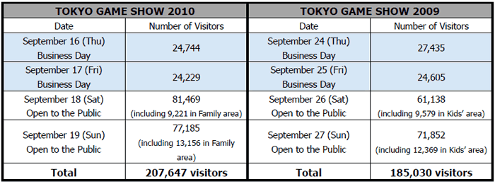

PDF Version » Download
September 27, 2010
Computer Entertainment Supplier’s Association
Nikkei Business Publications, Inc.
TOKYO GAME SHOW 2010 Summary Report
A Record High of 207,647 Visitors!
194 exhibitors and 1,458 booth partition units in 2010
For four days between September 16(Thursday) and 19(Sunday), the Tokyo Game Show 2010 was hosted by the Computer Entertainment Supplier’s Association (CESA; Chairman: Yoichi Wada; Location: Minato-ku, Tokyo), in cooperation with Nikkei Business Publications, Inc. (Nikkei BP; President & CEO: Yasuo Hirata; Location: Minato-ku, Tokyo). The show welcomed total of 207,647 visitors - first ever to exceed 200,000 visitors - at Makuhari Messe in Chiba City and ended in a great success.

The 20th celebration of the Tokyo Game Show 2010 embraced a midterm vision of becoming “The No. 1 Information Network in the Asian Region” and “The World’s Largest Event”. A total of 194 businesses, organizations, and schools from 14 countries and regions ran their booths, and in addition to a total of 712 titles registered in advance for the exhibition, a series of new titles were launched during the Show as well. TOKYO GAME SHOW 2010 successfully provided people all over the world with a wide variety of the latest information on games.
During the Asia Game Business Summit held on the first Business Day, key members of leading companies in the Asian game industry in China, Japan, Korea, and Taiwan presented lectures and took part in panel discussions on the future vision of the game business in the Asian region in front of Japanese and overseas visitors and press.
The new initiatives launched this year were a new program for “cosplayers” and the “Tougeki - Super Battle Opera” international fighting video game tournament, which added to another color to the event. Also, “Japan Game Awards 2010” announced the first prize winner for the newly established ‘Game Designers Award’ and provided additional attraction of games to the audience.
With an aim to further pursue its midterm vision of becoming “The No. 1 Information Network in the Asian Region” and “The World’s Largest Event”, TOKYO GAME SHOW 2011 is scheduled to be held at Makuhari Messe from September 15 (Thursday) or 16 (Friday) through September 18 (Sun), 2011. We hope to see you all there!
PDF Version » Download